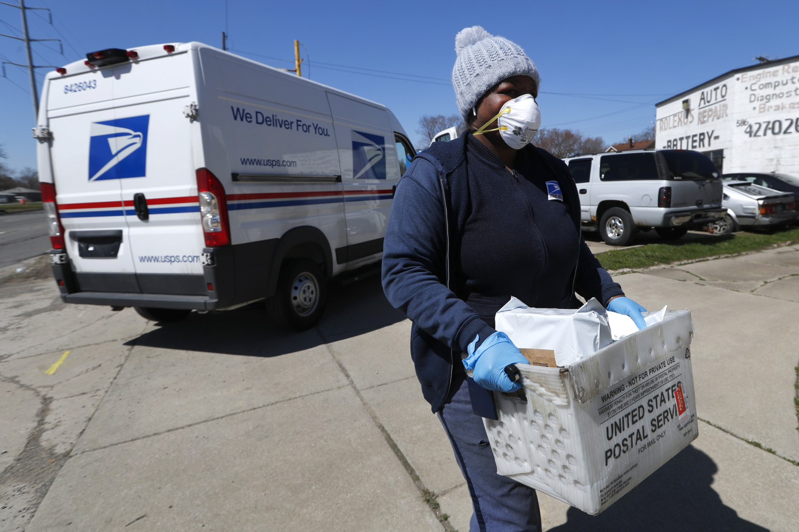
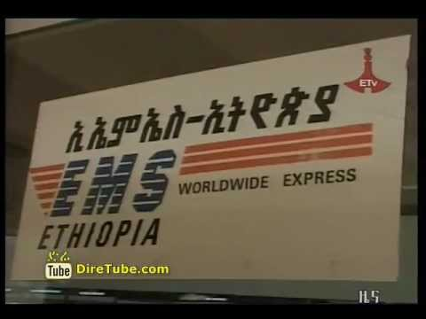
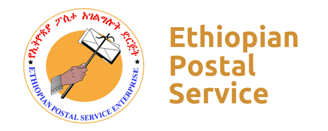

If you need help with any aspect of our postal service, we're here to assist you. Here are a few resources that you may find helpful:
We provide fast and reliable mail and package delivery services to individuals and businesses throughout the country. Our network of post offices and delivery centers ensures that your mail and packages are delivered on time and in excellent condition.
Whether you need express mail delivery or international shipping, we have a range of services to meet your needs. Our friendly and knowledgeable staff are always ready to help you with any questions or concerns you may have about our services.

The EMS service is EMS- example Ethiopia ems, part of the Ethiopian Postal Service which is Ethiopia's designated universal postal service provider, supporting customers, businesses and communities worldwide. The Ethiopian Postal Service was founded in 1894 and joined the EMS Cooperative in 1988. EMS-Ethiopia delivers EMS six days of the week reaching 90 million consumers and businesses across Ethiopia. Customers can easily access EMS at post offices across the country.
We're committed to providing our customers with the best possible service, and we're always looking for ways to improve. If you have any feedback or suggestions for how we can better meet your needs, please don't hesitate to let us know. Thank you for choosing My Postal System!

Thanks for you know my postal service